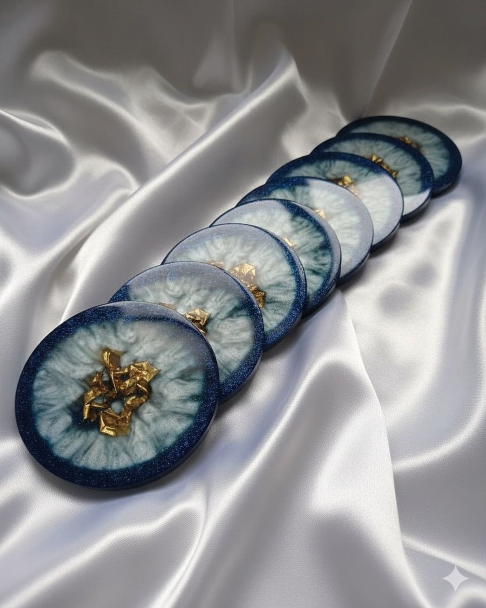
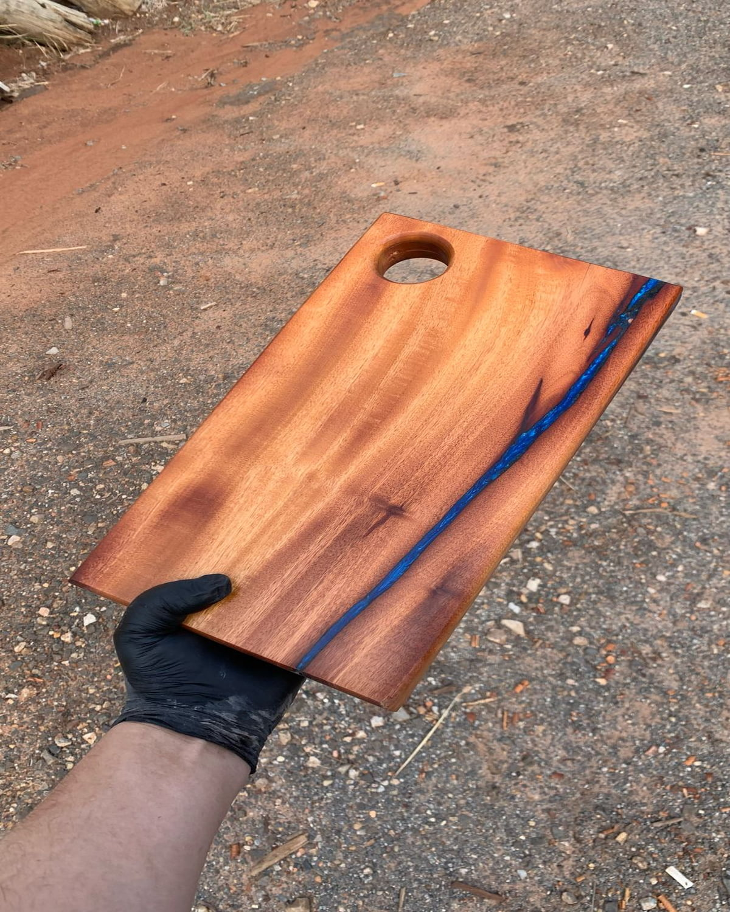

Coleção Selecionada

Bandeja floral ônix fumê
Tam. 18x18
Bandeja em resina translucida, na tonalidade ônix fumê, com flores e folhagens naturais preservadas em seu interior. Alças metálicas pretas que complementam o design contemporâneo. A peça conta com pés de silicone na base, que ajudam a proteger superficies contra riscos, proporcionam maior estabilidade, tornando perfeita para servir, decorar aparadores, mesas de centro ou até mesmo compor ambientes sofisticados.
Solicitar peça sob medida
Bandeja decorativa neblina prateada
Tam. 35x35
Bandeja em resina sobre base de MDF, com composição abstrata inspirada nos veios de marmore natural. Alças matalicas cromadas que complementam o design contemporâneo. A base inferior recebe acabamento preto fosco e conta com pés de silicone, proporcionando maior estabilidade, ajudando a proteger móveis e superficies contra riscos.
Solicitar peça sob medida
Porta copo aurora azul
Tam. 8,5x8,5
Porta copo em resina, inspirado nas formas orgânicas das geodas naturais. Tons profundos de azul se mesclam em um delicado efeito translucido, criando movimento e profundidade unicos na peça. O centro recebe detalhes em folha dourada, proporcionando sofisticação. Contem base de silicone para evitar riscos em movéis e superficies , além de proporcionar mais estabilidade durante o uso.
Solicitar peça sob medidaPorta copo galáxia
Tam. 8,5x8,5
Porta copo em resina, tons de preto e transparente, delicados efeitos em prata e aplicações de folhas de ouro. Inspirado na beleza e no misterio do universo, este porta copo apresenta um design que remete a uma galáxia em formação, com nuances em preto intenso. Além de sua estética elegante, possui pés de silicone na base, proporcionando maior estabilidade e protegendo as superficies contra riscos.
Solicitar peça sob medidaPorta copo aurora boreal
Tam. 8,5x8,5
Porta copo em resina, design sofisticado, combina a delicadeza do branco com a elegância dos detalhes em dourado e verde, criando uma peça cheia de personalidade. O destaque fica por conta do acabamento dourado central e das laterais pintadas em dourado, que valorizam ainda mais o seu visual exclusivo. Além de ser um item encantador, conta com pés de silicone, proporcionando estabilidade e protegendo as superficies contra riscos.
Solicitar peça sob medida